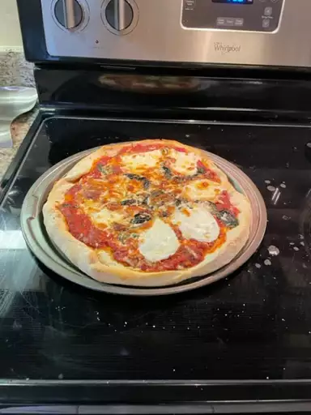

Pizza recipe

Pizza is a savory dish originating from Italy, featuring a thin or thick crust topped with tomato sauce,
cheese, and various toppings. Baked to perfection, it's a globally loved comfort food with endless variations.
Ingredients
- Yeast
- Sugar
- Bread Flour
- Olive Oil
- Salt
Steps
-
After you're finished mixing the ingredients, allow your dough to rest on the counter
for about 5 minutes. This will allow the gluten to relax, making the dough much easier to stretch and shape.
-
You might feel inclined to prep your workspace with a big handful of flour to prevent sticking.
This is a helpful step with many kinds of dough. However, in this case, too much flour can make
your pizza crust tough. Instead, rub your surface (and your hands) with a few tablespoons of olive oil
and maybe a little bit of flour. This will prevent sticking, encourage a crispy texture, and ensure a
gorgeous golden color.
-
You have a few options when it comes to shaping the dough. Stretch it in the air, use a rolling pin,
or pat it with your hands. No matter which method you choose, make sure not to overwork the dough.
Working it too much will create a tough texture. When you're done, you should have an even circle that's
about 10 to 12 inches wide and about ⅓-inch thick. If you get too thin, the crust may not be able to support
the sauce and toppings.